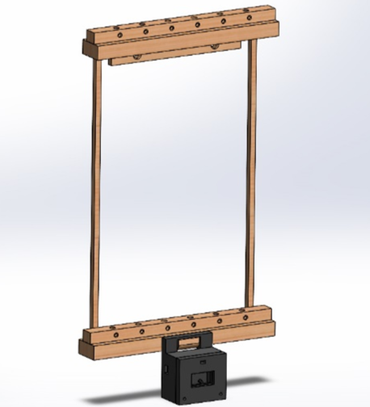
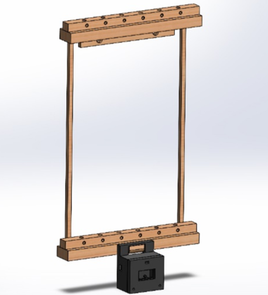

Bio
I am a Master’s Mechanical engineering student at Saint Louis University, working in haptics and mechatronics engineering. My research focuses on devloping novel wearable haptic systems to elicit effective and calming non-visual guided breathing. I specialize in interfacing mechanical systems to neurological and sensory stimulation based on user testing and device constraints. Furthermore, I collaborate on medical technologies which improve the efficacy of external ventrical drains through controllable mechanical aggitations.
Beyond my primary research, I perform an active role as in manufacturing engineering for the St. Louis Lighthouse for the Blind along with undergraduate mentorship in our lab. Additionally, I have two years as a full-time Division I baseball athlete and am a recipient of multiple engineering scholarships.


 
